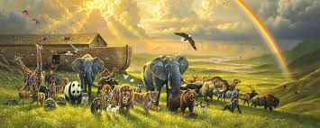

ცხოველები, ცხოველური ორგანიზმები (ლათ. Animalia) — ცოცხალ არსებათა ერთ-ერთი ძირითადი სამეფო (მეორე სამეფო მცენარეებია). ცხოველები
ჰეტეროტროფული ორგანიზმებია. უმარტივესების ზოგი სახეობა (ევგლენა) იკვებება როგორც ჰეტეროტროფულად, ისე ავტოტროფულად. თანამედროვე ეპოქაში ცხოვრობს 1,5-იდან 2 მლნ-მდე სახეობის ცხოველი

(მეცნიერთა ვარაუდით ეს რიცხვი შეიძლება 10 მილიონს აღწევდეს), მ. შ. 1 მლნ-ზე მეტიფეხსახსხრიანებია
სხვადასხვა სისტემატიკოსი ცხოველებს განსხვავებული რაოდენობის ტიპებად ყოფს. უფრო მეტად მიღებულია შემდეგი ტიპები: უმარტივესები (ზოგი ამ ტიპს 5 ტიპად ყოფს), ღრუბელები, ნაწლავღრუიანები, ბრტყელი ჭიები, ნემერტინები, მრგვალი ჭიები, თავეკლიანი ჭიები, რგოლოვანი ჭიები, ფეხსახსრიანები, ხავსელები, მხარფეხიანები, რბილტანიანები,
კანეკლიანები, პოგონოფორები, ჯაგარყბიანები, ნელამავალნი, ნახევრადქორდიანები და ქორდიანები. ცხოველებს შეისწავლის ზოოლოგია და მრავალი სპეციალური ზოოლოგიური დისციპლინა: პროტისტოლოგია, ენტომოლოგია, იქთიოლოგია, ჰერპეტოლოგია, ორნითოლოგია, თერიოლოგია, მალაკოლოგია და სხვა.
ცხოველებს დიდი მნიშვნელობა აქვს ადამიანის ცხოვრებაში
მათ იყენებენ საკვებად, გამწევ ძალად, სამრეწველო ნედლეულად და სხვა.
ზოგ ცხოველს ზიანი მოაქვს სახალხო მეურნეობის ამა თუ იმ დარგისათვის.
განსაკუთრებით აღნიშვნის ღირსია მათი როლი გარემოს იმ სახით შენარჩუნებაში როგორითაც იგი დღეისათვის მოგვეპოვება.
ამ მნიშვნელობას მოსახლეობის დიდი ნაწილი ვერ აცნობიერებს და სწორედ ესაა მთავარი მიზეზი იმ პრობლემებისა რომელთა წინაშეც დგას ცხოველთა სამყარო.
მრავალი სახეობა დაუზოგავი განადგურების და ბუნებრივ პროცესებში არასწორი ჩარევის გამო მოისპო ან მოსპობის საფრთხის წინაშე დგას. ამჟამად ქმედითი ღონისძიებები ტარდება ცხოველთა სახეობრივი
რაოდენობის რეგულირებისათვის, დაცვისათვის, აღწარმოებისათვის (გამოცემულია კანონები, დაარსებულია ნაკრძალები, აღკვეთილები, შემოღებულია „წითელი წიგნი“ და სხვა.).
თუმცა შედეგების მიხედვით თუ ვიმსჯელებთ, აღმოჩნდება რომ ცხოველური სამყაროს დეგრადაციის პროგრესირება გეომეტრიულ პროგრესირებას უახლოვდება.
არსებობს მოსაზრება, რომ ბუნების გადაგვარების პროცესი რომელიც ასეთი აშკარაა, წარმოადგენს ევოლუციური განვითარების ერთ-ერთ ეტაპს და შესაბამისად სახეობათა თუ მთლიანად ეკოსისტემათა გაქრობა არაა ნიშანი იმისა რომ საფრთხე მთლიანად ცოცხალ ბუნებას ემუქრება.
თუმცა სანამ ასეთი ვარაუდები თეორიის სახეს არ მიიღებს (თუმცა შეიძლება არც არასოდეს მოხდეს), მანამდე კაცობრიობა დიდ რისკზე მიდის. ამდენად თითოეული ადამიანი ვალდებულია გაუფრთხილდეს და დაიცვას ცოცხალი ბუნება.